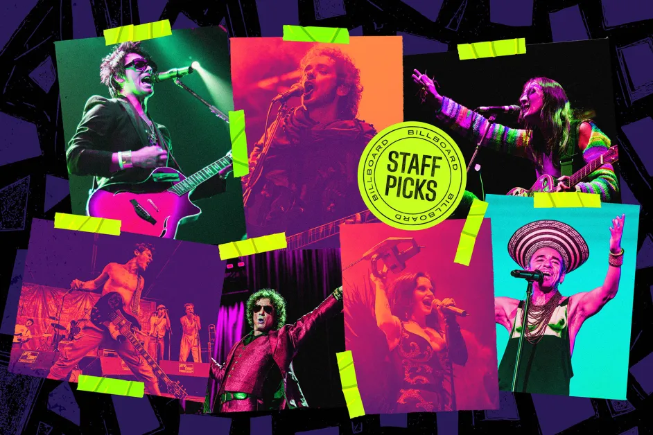

Las redes sociales, los foros underground y las barras de las cantinas en toda Iberoamérica están ardiendo. La revista estadounidense Billboard, siempre lista para meter el dedo en la llaga desde su perspectiva mainstream, acaba de soltar su "definitiva" lista de Las 50 mejores bandas de rock en español de todos los tiempos. Y como era de esperarse, el listado es un campo minado de decisiones cuestionables y ausencias que rozan la ofensa.
El podio, para ser justos, juega a la segura y no busca pleitos físicos: 🇦🇷 Soda Stereo se corona con el oro indiscutible, demostrando que el legado de Cerati es intocable. La plata se la lleva la inagotable maquinaria de 🇲🇽 Café Tacvba, y el bronce apela a la melancolía fundacional con 🇦🇷 Sui Generis. Hasta ahí, los puristas asienten con la cabeza. Pero si rascas un poco más abajo, comienza el verdadero caos curatorial.

Hablemos del elefante en la habitación: ¿Es verdaderamente justo llamar a esto una lista de "Rock"? Billboard metió en la misma licuadora el pop ochentero de Hombres G y Alaska y Dinarama, junto a pioneros mundiales del punk crudo como los peruanos Los Saicos, y lo revolvió todo con la electrónica de Plastilina Mosh y Kinky. ¿De verdad Maná merece estar por encima de los padres del asfalto como El Tri? ¿Zoé es históricamente superior a Rata Blanca o Héroes del Silencio?
Parece que para armar este conteo, los criterios pesaron más del lado de la fama radial, los números de ventas y el algoritmo de Spotify, que del verdadero impacto cultural en el movimiento contracultural de habla hispana. Aún así, es innegable que esta lista sirve como una radiografía perfecta de lo que la industria gringa entiende por música latina.
EXPEDIENTE CLASIFICADO: EL TOP 50 OFICIAL
- 01. 🇦🇷 Soda Stereo 🥇
- 02. 🇲🇽 Café Tacvba 🥈
- 03. 🇦🇷 Sui Generis 🥉
- 04. 🇦🇷 Los Fabulosos Cadillacs
- 05. 🇨🇱 Los Prisioneros
- 06. 🇦🇷 Babasónicos
- 07. 🇲🇽 Caifanes
- 08. 🇲🇽 Zoé
- 09. 🇲🇽 Maná
- 10. 🇨🇴 Aterciopelados
- 11. 🇪🇸 Héroes del Silencio
- 12. 🇲🇽 El Tri
- 13. 🇲🇽 Molotov
- 14. 🇲🇽 Maldita Vecindad y los Hijos del 5to Patio
- 15. 🇦🇷 Enanitos Verdes
- 16. 🇪🇸 La Unión
- 17. 🇪🇸 Alaska y Dinarama
- 18. 🇨🇱 Los Jaivas
- 19. 🇫🇷 Mano Negra
- 20. 🇪🇸 Jarabe de Palo
- 21. 🇲🇽 El Gran Silencio
- 22. 🇦🇷 Almendra
- 23. 🇦🇷 Los Rodríguez
- 24. 🇲🇽 Fobia
- 25. 🇵🇪 Los Saicos
- 26. 🇨🇱 La Ley
- 27. 🇲🇽 Kinky
- 28. 🇦🇷 Los Auténticos Decadentes
- 29. 🇲🇽 Tijuana No!
- 30. 🇺🇾 No Te Va Gustar
- 31. 🇦🇷 Rata Blanca
- 32. 🇲🇽 Porter
- 33. 🇲🇽 Panteón Rococó
- 34. 🇨🇱 Los Bunkers
- 35. 🇦🇷 Vilma Palma e Vampiros
- 36. 🇲🇽 Santa Sabina
- 37. 🇪🇸 Radio Futura
- 38. 🇲🇽 Plastilina Mosh
- 39. 🇦🇷 Los Abuelos de la Nada
- 40. 🇪🇸 Hombres G
- 41. 🇺🇾 El Cuarteto de Nos
- 42. 🇲🇽 Hello Seahorse!
- 43. 🇦🇷 Bersuit Vergarabat
- 44. 🇻🇪 La Vida Bohème
- 45. 🇪🇸 Duncan Dhu
- 46. 🇲🇽 Zurdok
- 47. 🇵🇪 Líbido
- 48. 🇨🇴 Diamante Eléctrico
- 49. 🇵🇦 Los Rabanes
- 50. 🇲🇽 Enjambre